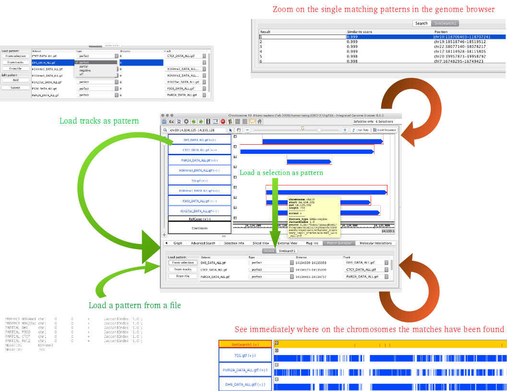
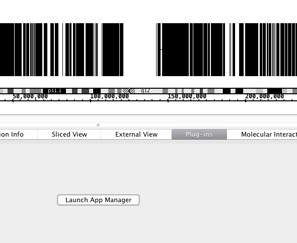
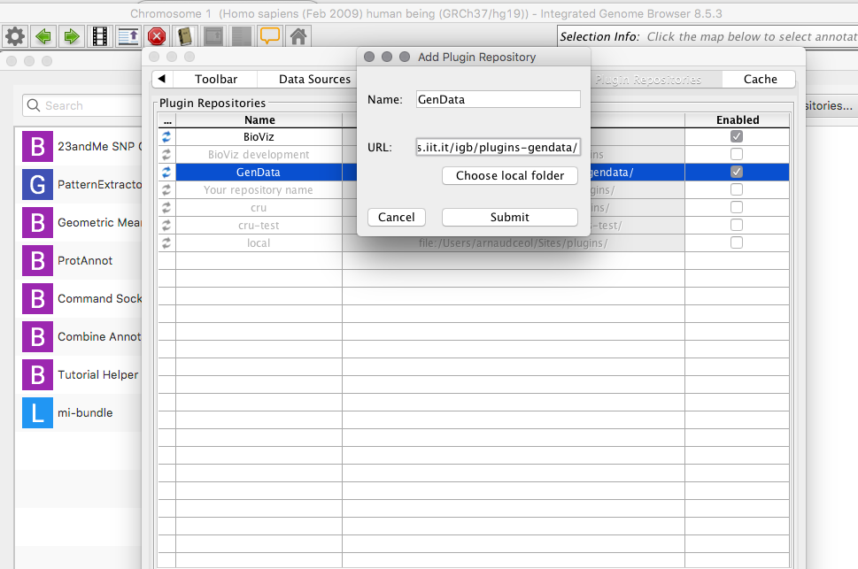
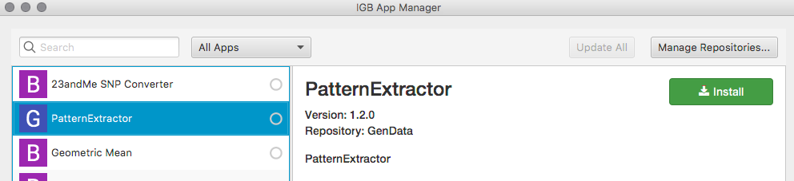
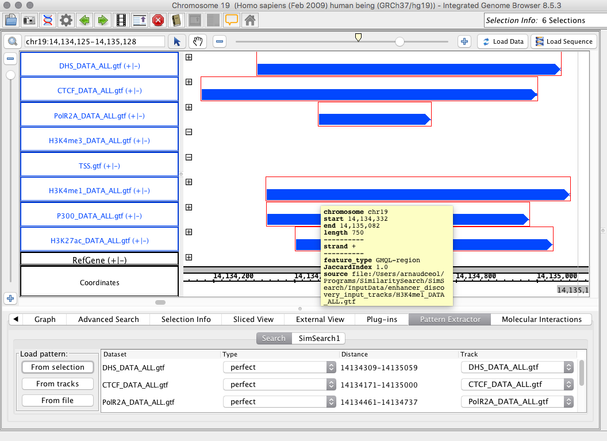
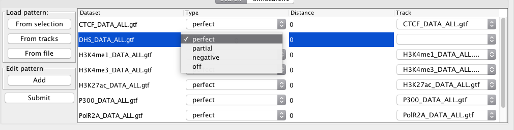
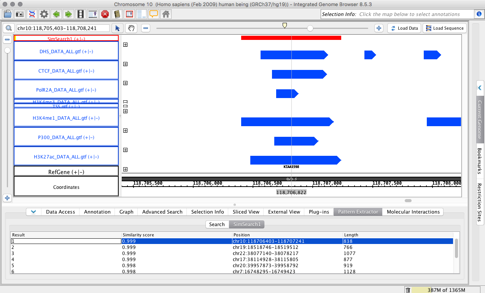
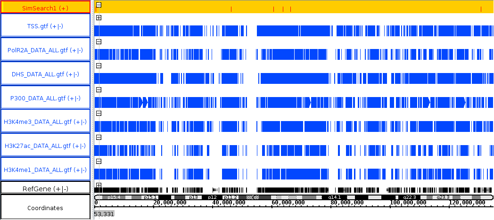

SimSearch: an IGB plugin to identify and compare occurrences of
(epi)genomics feature patterns in multiple genome browser tracks.
SimSearch: an IGB plugin to identify and compare occurrences of
(epi)genomics feature patterns in multiple genome browser tracks.
Search of Patterns in Genomic Sequences
Background
Nowadays, the available amount of genomic data is huge and it is growing thanks to the Next Generation Sequencing (NGS) technology. Reading and sequencing the human genome is becoming a relatively fast and inexpensive process. The corresponding potential for data analysis and querying is not a problem equally faced and it poses an important open challenge to the data management community. At the current state-of-art, NGS data are managed in physical formats and standards that are strongly influenced by the data production process of sequencing machines, and do not offer any high-level view to queried or analyzed. Most of the work in this area is carried out manually by biologists and it can take an enormous amount of time producing poor results. In addition, biologists' observations and analyses are usually limited to specific portions of the genome which are the target of each biological or medical experiment. These are incredible limitations to the discovery of new interesting biological phenomena (e.g., new promising regions of the genome, or new correlations between biological features) that can not be achieved at a small experiment scale.
GenData 2020
The GenData2020 research project was born to address this challenge, enabling an efficient and effective query and analysis process of genomic data. GenData2020, a framework for NGS data storage, management, query, and analysis, is currently under design and development. The two main elements used by this system are a Genometric Data Model (GDM), which encodes experiment results in a format that takes into account the organization of the genome, and specifically its separation into genomic regions, and a Genometric Query Language (GMQL), that uses those as the main data abstractions for extracting regions of interest from experiments and for computing their properties, with high-level operations for manipulating regions and for measuring their distances.
Pattern searching in genome browsers:
Our main contribution to the project is aimed to the design and implementation of a pattern-search algorithm which provides biologists with the ability, once they identify an interesting genomic pattern, to look for similar occurrences in the data, thus facilitating genomic data access and use. We have implemented this algorithm as a plugin for the Integrated Genome Browser (IGB), that allows biologists to use our algorithm in collaboration with IGB (Integrated Genome Browser), a visualization tool used to observe genomic data sets.
 Overview of the plugin: pattern can be either imported from an external file, from a selection of regions directly in the genome browser or generated from the tracks available (green arrows). It is possible to see the regions matching the pattern both at the chromosome level, or by zooming on the specific region of a particular match (red arrows).
Installation:
Install the Integrated Genome Browser (IGB)
The Integrated Genome Browser can be downloaded from http://bioviz.org/igb/
Add the GenData repository:
From IGB, go to the “plug-ins” tab and launch the app manager.

Add the GenData repository: press the “add” button, and insert “GenData” for name, and the url: http://cru.genomics.iit.it/igb/plugins-simsearch/

Then select the PatternSearch plugin and press “install”. A new tab will appear in the tab panel in IGB.

Using the plugin:
Load data:
Select a genome version in IGB (rigth panel), for instance Homo sapiens, version H_sapiens_feb_2009
Go to "file" -> "open URL" and add the URL: http://www-db.disi.unibo.it/research/GenData/SimSearch/data/enhancer_discovery_input_tracks/CTCF_DATA_ALL.gtf.gz.
Repeat for all files available at data/enhancer_discovery_input_tracks/:
- http://www-db.disi.unibo.it/research/GenData/SimSearch/data/enhancer_discovery_input_tracks/CTCF_DATA_ALL.gtf.gz
- http://www-db.disi.unibo.it/research/GenData/SimSearch/data/enhancer_discovery_input_tracks/DHS_DATA_ALL.gtf.gz
- http://www-db.disi.unibo.it/research/GenData/SimSearch/data/enhancer_discovery_input_tracks/H3K27ac_DATA_ALL.gtf.gz
- http://www-db.disi.unibo.it/research/GenData/SimSearch/data/enhancer_discovery_input_tracks/H3K4me1_DATA_ALL.gtf.gz
- http://www-db.disi.unibo.it/research/GenData/SimSearch/data/enhancer_discovery_input_tracks/H3K4me3_DATA_ALL.gtf.gz
- http://www-db.disi.unibo.it/research/GenData/SimSearch/data/enhancer_discovery_input_tracks/P300_DATA_ALL.gtf.gz
- http://www-db.disi.unibo.it/research/GenData/SimSearch/data/enhancer_discovery_input_tracks/PolR2A_DATA_ALL.gtf.gz
- http://www-db.disi.unibo.it/research/GenData/SimSearch/data/enhancer_discovery_input_tracks/TSS.gtf.gz
In alternative, you can download and extract the package which contains all the files enhancer_discovery_input_tracks.tgz, and load them all at once by pressing the “open data” button and select the files in several format available.
Load a pattern:
A pattern can be selected in three different ways:
Load pattern from a file:
A pattern can be described in a file, like in the example bellow:
PERFECT H3K4me1 chr1 0 0 + JaccardIndex "1.0"; PERFECT H3K27ac chr1 0 0 + JaccardIndex "1.0"; PARTIAL DHS chr1 0 0 + JaccardIndex "1.0"; PARTIAL P300 chr1 0 0 + JaccardIndex "1.0"; PARTIAL CTCF chr1 0 0 + JaccardIndex "1.0"; PARTIAL Pol2 chr1 0 0 + JaccardIndex "1.0"; NEGATIVE H3K4me3 NEGATIVE TSS
You can download for example the pattern file available at enhancer_discovery_pattern.txt. Press the “From file” button in the SimSearch section of IGB and select the file. The pattern will be automatically loaded in the Search tab, including the dataset names, type, and distance. You should then select the tracks on which each dataset should be searched (see bellow).
Load Pattern from a selection:
When the user browses the tracks of the genome browser, either looking at her/his own results or at external data, like the one generated by the ENCODE or Roadmap Epigenomics project, he/she may identify interesting combinations of peaks (or any other regions). It is possible to select the region with the mouse, and import them as a new pattern in the SimSearch search tab by pressing the “From selection” button. The dataset IDs and distances will be automatically filled. By default, the type is set to perfect match, but this can be changed independently for each dataset (see bellow). Similarly, the track assigned to each dataset is the one from which the pattern has been selected, but this can be changed manually.

Generate a pattern from available tracks:
By pressing the “from tracks” button, a pattern is automatically generated, for which each available track is transferred as a dataset. For instance if five tracks are available for five different histone marks, a pattern of 5 datasets will we created. Each dataset will be associated to its respective track by default, and the type of match will be set to "perfect". Nevertheless, this can be changed, for instance to search in different tracks representing different tissues or conditions (see bellow).

Tune the pattern:
A pattern is composed of several datasets (one for each row in the table). For each dataset, it is possible to define:
- The type of match: perfect (the region has to be present in target track), partial (a region may be present in the target track), negative (no region should be present in teh target track). It is also possible to ignore this dataset by selecting "off".
- The distance: relative distance between the intervals of each dataset. This can be a single number (considering the center of the interval), an interval, or a list of interval (separated by ";") if more than one interval should be match for this dataset.
- The associated track: select the track on which to find a matching interval for this dataset.
Submit the search:
Press the submit button to access an additional option panel and start the search.
Once the search is over, a new table with the results is created (bottom part in the figure bellow), and a new track is added (red track named "SimSearch1" in the figure).
The new tab provides a summary of all the matches found, ordered by score. If the user click on any result, the respective region will be automatically displayed in the genome browser.

On the new automatically generated track (track with orange background bellow), the position of each match is indicated (red bars inthe figure), allowing to rapidly identify where on the genome the matches have been identified.

The Pattern identified can be selected and used for a new query.